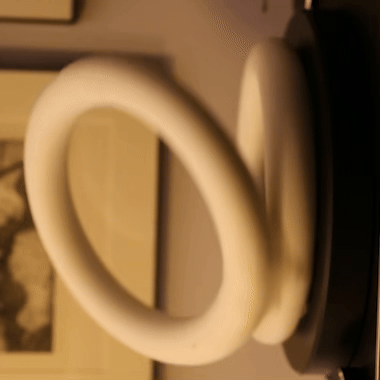

Anisotropy of Non-rigidity
08/05/2024

Left: two connected Styrofoam rings on a rotating turntable. Most observers report that the two rings are rigidly joined and rotating together.
Right: the ring is almost always reported as moving independently wobbling against the other ring. The context reveals that one video is just a 90° rotation of the other.